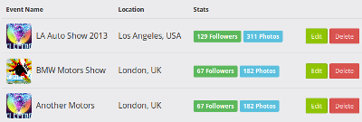
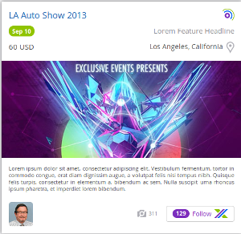
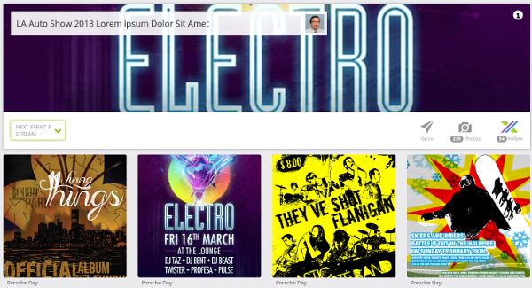
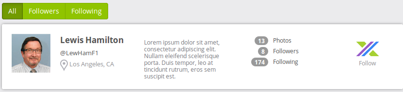
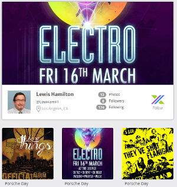

Welcome page
There should be a simple home page.
Frontend:
- Prepare home page and plug it into the project
It is always possible for mobile users to upload photos (always visible upload button). Every uploaded image is automatically assigned to an event using: datetime and lat/lon.
In case there are multiple matches then user is allowed to choose the right one.
In case there’s no match the image is only assigned to the user and shown in his profile.
Backend:
- image upload endpoint (that makes use of Amazon AWS and is smart enough to return list of matching events in case it’s more than one matching lat/lon and datetime)
Frontend
- make it possible for end-users to take and upload photos
- implement selection of the event in case there are multiple events matching lat/lon and datetime
From pages accessible for anonymous users there should be a way to sign in and to log in.
User account has the following fields:
- display name (required)
- username (required)
- email (required)
- password (required)
- about
- location (required)
- user thumbnail image
- user hero image
Registration
In order to use features like creating new events, adding photos, following events or profiles user has to be registered
Backend:
- Create a registration endpoint, allowing registration for anonymous users. Assumption is that all fields from account are to be filled here)
- After registration data is received a registration confirmation email should be sent. User should click on a link in this email to activate his account
- Create endpoint to check username availability
Frontend:
- Add a registration popup with fields like the ones above and a service that will call backend endpoint in order to register a new user.
- It’s possible that the data that is going to be stored in the database might be rejected by the server (for example username is already taken) so it’s possible that the server will return Bad Request response with some error message - this should be handled in the frontend.
- plug into the page checking for username availability
Log in
In order to use the app user has to be logged in
Backend:
- Create authentication end-point that will log a user in and return user’s details to the browser, so that it will be able to use it to show user details (like photo and name in the top right corner)
Frontend:
- Build login popup, plug the endpoint into it and also somehow force authentication on the pages that should be protected (check if user is logged in). Probably in router’s resolvers.
Log out
Backend:
- Create log out endpoint
Frontend:
- Plug the endpoint into the logout function in the frontend
Account management
Users should be allowed to manage their accounts so there’s a page dedicated for this task
Backend:
- Create endopoint (this and other endpoints will require authenticated user) to save and to receive account data
Frontend:
- Plug the account management endpoint into the account page
Events are the key component in the system.
Facts about events:
Everyone can add events. Everyone can follow events.
Event creator can manage (edit/delete) his events.
One event is shown only once on the list of events even if it has multiple dates and locations (those are shown in the dropdown from the event detail page.
Each event has the following attributes:
Event Title
About Event
Short link (event ulr in xau.to)
Event Image
Event Size (how many cars)
Dates and locations
- Location name (optional)
- Geolocated address (lat/lon)
- Address 1
- Address 2
- City
- State
- Zip/Postal Code
- Country
- Date
- Start time
- End time
- Attendance cost * Free or Price range (low, high) and currency
- Exhibition cost * Free or Price range (low, high) and currency
It must be possible to somehow determine if a stream is happening now. Might be enough to check the current date and time in the frontend.
Create / edit /delete event
Every authenticated user is allowed to create an event and to manage his own events.
Backend:
- add endpoint to manage event details
- add endpoint to manage event locations and dates
- add endpoint to manage event photos
- add endpoint to delete events
Frontend:
- add page to gather event details
- add page to gather event locations and dates
- prepare popup to select event photos
- on edit page add photo management panel
- plug into the edit page the delete endpoint
List of my events
A user can browse events he created. List shows basic details about the events like image, name, location, number of followers, number of images. It’s also possible to delete an event or to get into edit event page.

- Frontend
- attach list of my events to rest endpoint (probably the same endpoint as for general list of events might be used here
List of events
Everyone is allowed to view, filter and follow events. A lot of details about particular events are shown for each event: name, date, price, organizer, number of photos, number of followers (with ability to follow the event), image, location, headline, description, information if stream is currently active.
Backend:
- create endpoint that will return list of events; should be able to filter events (text search in event name, headline and location; followed; streaming now), order events and to paginate them. That endpoint should also be used by the global search box.
- create “follow” endpoint
Frontend:
- plug the list endpoint into the events list page
- plug the “follow” endpoint into the page
View event details
Event data is to be shown to the application users accessing the event page.
From that page:

- mobile users can use “go to” function to open navigation app and check how to get to the event.
- users can add photos to the selected event date. This would be used, for example, by a professional photographer who is uploading pictures from a non-mobile camera at home, or at time after the expiration of the event.
- follow event
- view other event dates and locations
- view event’s image stream. Each image may be marked as favorite (by authenticated users), shared with other people or reported as inappropriate. images are grouped by dates
- it’s possible to share album for specific date and event
Backend:
- make sure that the photo management endpoint makes it possible to add photos even if user is not the event’s owner
- add endpoint that will return all data about the event including location and dates (in case it will be different than endopoint used in event management).
- for the image stream implement some solution that will provide data (might be something AJAX based or WebSockets based like SockJS + Tornado)
- add endpoint for fav’ing images
- add endpoint for flagging images as inappropriate
- album / date sharing (this probably means that there should also be a dedicated page to view shared album?)
Frontend:
- Use real event data
- Add a panel to add photos to selected event date
- Add calls to backend to the follow button
- Add support for “Go to” button
- Make the image stream alive (use some client library like sockjs or socketio)
- plug favorite and flag endpoints into the frontend
Profiles is a section where it is possible to browse profiles of registered users, to view their photos and to follow them.
List of profiles
Everyone is allowed to view, filter and follow profiles. List shows profiles. Each has the following data shown: image, full name, twitter/username (what is this @LewHamF1 on the profile list?), location, information about user, amount of photos, amount of followers and amount of followed people (events too?), link to user webpage. It’s also possible to follow a user.
List is filterable and has predefined categories: all, followers, following
Backend:
- create endpoint that will return list of profiles; should be able to filter profiles (text search in user full name, about and location), order (there’s no ordering of neither events nor profiles in the layout) profiles and to paginate them. That endpoint should also be used by the global search box.
- create “follow” endpoint for following users
Frontend:
- plug the list endpoint into the events list page
- plug the “follow” endpoint into the page
User details
Page shows details of user and his photo-stream. It’s allowed to follow a user. Except for user details (image, full name, twitter/username (what is this @LewHamF1 on the profile list?), location, information about user, amount of photos, amount of followers and amount of followed people (events too?), link to user webpage) there is also a photo stream
Backend:
- endpoint to retrieve single user’s details
- stream of user photos
Frontend:
- plug the user details endpoint into the page
- plug the stream of photos
A place where user can manage his own photos
Real-time images from followed events and profiles
Backend:
- set up endpoint to serve realtime images
Frontend:
- connect to server to get and display images